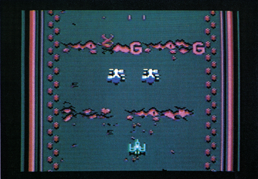
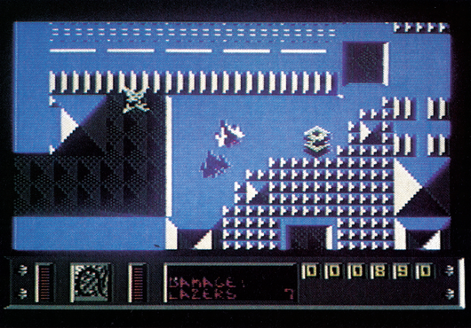

Im Weltraum ist die Hölle los
Wenn es nach den Spiele-Programmierern ginge, dann steht uns in ferner Zukunft viel Action im Weltall bevor.
Die fünfte Alleykat-Rennsaison hat begonnen. Auch diesmal sind mehrere hundert Rennfahrer an den Start gegangen, um die Alleykat-'Trophäe zu gewinnen. Dies ist in groben Zügen die Hintergrundstory des neuesten Programms von Andrew Braybrook, der schon die Spiele-Hits »Paradroid« und »Uridium« schrieb. Mit »Alleykat«lieferte er wiederum ein Action-Spiel ab, bei dem er sich auf die technischen Fähigkeiten des © 64 konzentrierte.

Die einzelnen Rennstrecken befinden sich in zylinderförmigen Raumstationen, die quer über das Sonnensystem verteilt sind. Jeden Monat finden nun mehrere Wettkämpfe statt, der Spieler kann aber nur an einem teilnehmen. Hier muß man sich also für dasrichtige Rennen entscheiden.
Bei den Wettkämpfen geht es darum, keinen Unfall zu bauen und trotzdem soviele Bonus-Punkte wie möglich zu sammeln. Viele Hindernisse sowie zahlreiche gegnerische Fahrzeuge versuchen Sie aus der Bahn zu bringen. Zum Glück haben Sie eine oder zwei Laserkanonen an Bord, mit denen Sie sich den Weg freiballern können.
Grafisch ist das Spiel nicht ganz so schön wie »Uridium«, hat aber noch mehr Action und ist wesentlich komplexer. Das Titelbild zaubert dafür Hunderte von Farbtönen auf den Monitor: Andrew Braybrook darfsich ab sofort »König des Rasterinterrupts« nennen, denn die Effekte und Mischfarben der Titelseite verwandeln den C 64in einen anderen Computer.
C 128-Besitzer freuen sich sogar doppelt über Alleykat: Wird das Programm im C 64-Modus dieses Computers geladen, schaltet Alleykat automatisch in den 2-MHz-Modus. Dadurch kommen noch mehr Gegner und Hindernisse auf den Schirm.
Alles in allem ist Alleykat ein sehr interessantes und sauber programmiertes Actionspiel, das aber nicht so originell und überzeugend wie seine Vorgänger ist. Für echte Braybrook-Fans ist Alleykat ein Muß, ansonsten sollten Sie mal auch auf andere Weltraum-Actionspiele schielen.
Ein weiterer Vertreter dieses Genre ist»Parallax«. Hier wird mal wieder gegen die bösen Außerirdischen gekämpft, die unsere Erde erobern wollen.

Die Außerirdischen kommen aber erstmal ganz freundlich an und laden fünf Astronauten auf ihr riesiges Raumschiff ein. Die fünf werden dort jedoch gewaltsam getrennt und in fünf verschiedenen Sektoren des Raumschiffs gefangengehalten. Sie übernehmen die Rolle des Astronauten Alpha, der seine vier Kollegen (Beta, Gamma, Delta, Epsilon) aus den Klauen der Außerirdischen retten und dann das Raumschiff zerstören soll. Ein kleiner Gleiter der Außerirdischen ist recht schnell gekapert und Sie machen sich auf den Weg, erstmal aus der ersten Zone des Schiffs zu entfliehen. Damit Sie nicht beim Ausfliegen durch das Sicherheitssystem zerstört werden, müssen Sie dem Hauptcomputer einen Offnungscode eingeben. An diesen Offnungscode kommen Sie nur mit Hilfe von entführten Wissenschaftlern heran, die wiederum einer Gehirnwäsche unterzogen worden sind und deswegen den Code nicht freiwillig herausrücken. _
Sie merken schon, es ist alles nicht so einfach bei »Parallax«. Neben einer Menge Weltraum-Action, bei der manaufdem Raumschiff herumfliegen muß, kommt noch das Adventure-Element beim Zusammensuchen der Codes hinzu. Hier muß man nämlich aus dem Raumschiff raus und Gebäude auf der Oberfläche des Riesenraumschiffs durchsuchen.
Das riesige Raumschiff wird in Semi-3D-Grafik, ähnlich der von »Uridium«, dargestellt, scrollt aber in alle Richtungen. Ihr Schiff kann in verschiedenen Höhen und sogar unter dem Riesenraumer durchfliegen. Wenn Sie ein Gebäude betreten, sehen Sie dessen Einrichtung ebenfalls aus der Vogelperspektive. Die Grafik ist in beiden Fällen sehr gut. Die begleitende Musik ist technisch gut programmiert, von der Komposition her aber etwas gewöhnungsbedürftig.
»Parallax« bietet wohl mehr als genug Action, um auch den eingefleischtesten Baller-Freak zu überzeugen, wie auch Adventure-Teile, die die Intelligenz des Spielers fordern.
(bs)| Titel | Alleykat |
|---|---|
| Spielidee | 11/15 |
| Grafik | 12/15 |
| Sound | 11/15 |
| Schwierigkeit | 13/15 |
| Motivation | 12/15 |
| Besonderheiten | tolle Spezial-Effekte Zwei-Spieler-Modus |
| Hersteller | Hewson |
| Preis | 35 Mark (Kassette) |
| Bezugsquelle | Rushware An der Gümpgesbrücke 24 4044 Kaarst |
| Titel | Parallax |
|---|---|
| Spielidee | 12/15 |
| Grafik | 12/15 |
| Sound | 11/15 |
| Schwierigkeit | 11/15 |
| Motivation | 11/15 |
| Besonderheiten | Mischung aus Action und Adventure |
| Hersteller | Occan |
| Preis | 29 Mark (Kassette) |
| Bezugsquelle | Quelle — Versandhaus und Fillialen. |